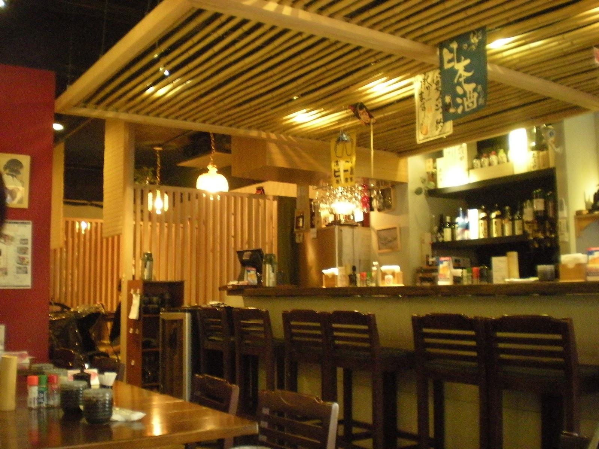
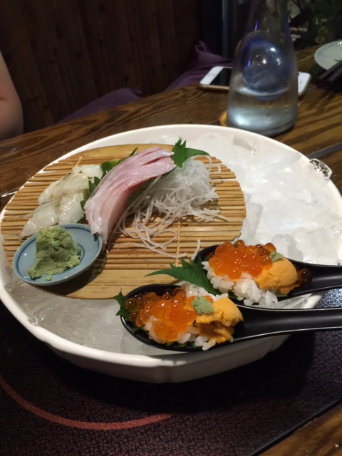
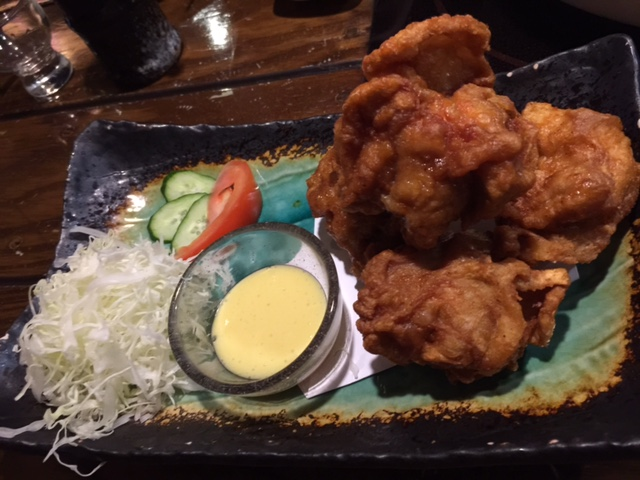
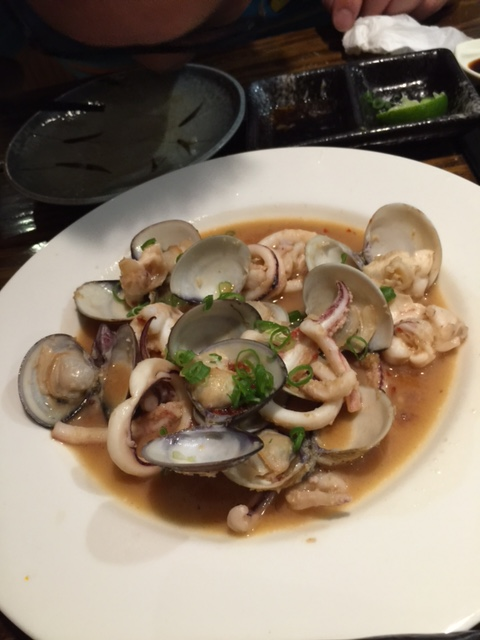
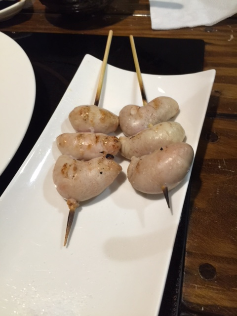
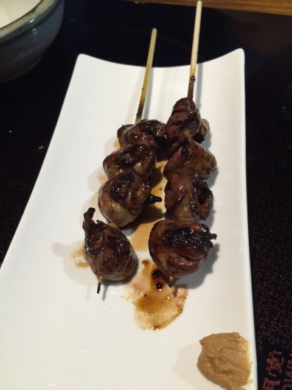

煒珩的食記
[天母 日式料理] 窩 Casual Japanese Dining
此店為日本人開的居酒屋，適合下班小酌，三五好友聚會的好地方。有些餐點沒有寫在菜單上，建議可以先問服務生有沒有推薦的季節性好料。

- 綜合生魚片拚盤:日本產地直送，隨季節變化，新鮮好吃!

- 炸雞塊:菜單上必點料理!

- 蒜炒蛤蠣與透抽:普普，不用特別點他

- 串物:雞佛與雞心管，友人很愛吃雞佛，我不敢再吃，我只推香Q的雞心管


總結:因為是居酒屋，可能會吃不飽，要吃很飽的話可能CP值有點低，但菜色口味都很棒!推薦給大家~謝謝!
窩的資訊
地址:台北市士林區天母東路88號
電話:02 2873 7585
營業時間:11:30–14:30, 17:30–23:30